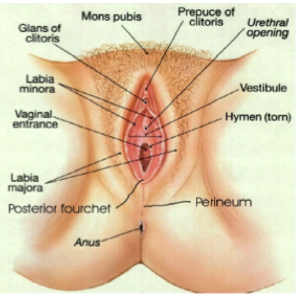

Female Anatomy

- The Mons Pubis: aka the “mons”. The fleshy mound usually covered with pubic hair.
- The labia majora: the “outer lips” usually covered in hair.
- The labia minora: the “inner lips” usually hairless.
- The vulva: includes the labia minora and everything inside them.
- The clitoris: approximately 8,000 nerve endings making it the clitoris a purely sexual organ.
- The clitoral hood/prepuce: the soft fold of skin protecting the clitoris.
- The urethral orifice/urinary opening: the tube that carries urine from the bladder, leading to the urethra.
- The vaginal orifice/ introitus: leads to the vagina and may be partially covered by the hymen.
- The hymen: thin piece of tissue that lines the vaginal opening.
- The perineum: the region between the vulva and the anus.
- The anus: the opening of the rectum, controlled by two sphincter muscles, one involuntary and the other voluntary.
- The vagina: the canal that leads to the cervix and uterus.
- The urethral sponge/ G-spot: an area of spongy tissue that surrounds the urethra, found at the front of the vagina, few inches inside the opening. When stimulated with fingers, penises, or curved sex toys, the G-spot can be an erogenous zone.
- The cervix: the base of the uterus.
- The uterus: this organ allows a fertilized egg implants itself and begins to develop into a fetus.
- The fallopian tubes: pathways that connect the uterus to the ovaries. The egg then travels down the fallopian tube to the uterus.Fertilization usually occurs in the fallopian tube.
- The ovaries: they are the female gonads; they produce eggs and release estrogen and progesterone hormones.
- The pubococcygeus muscle: aka PC muscle, stretches from pubic bone to tailbone. It surrounds the urethra, vagina, and rectum, and helps to support the pelvic organs.
- Females can strengthen the PC muscle by doing Kegel exercises, which tense and relax the muscle. Kegal exercises can increase sexual pleasure and help prevent urinary incontinence as the female ages.
- The rectum: stats at the anus and leads to the colon, where fecal matter is eliminated from the body. Because the rectum is lined with smooth delicate tissue, and no natural lubrication is produced, lubricant must be used during anal penetration to provide comfort and avoid tearing.